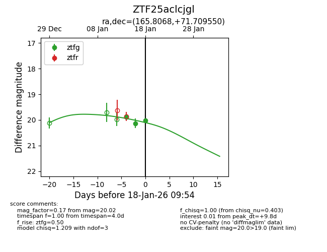
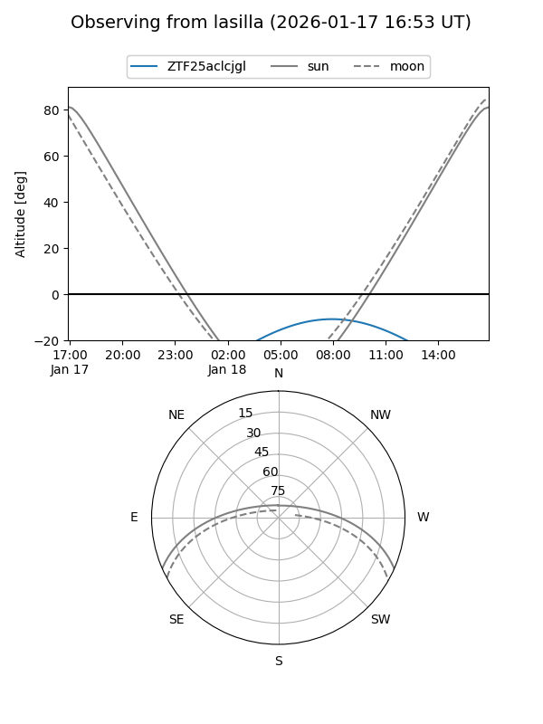
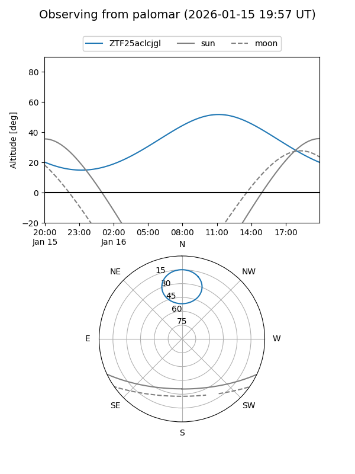
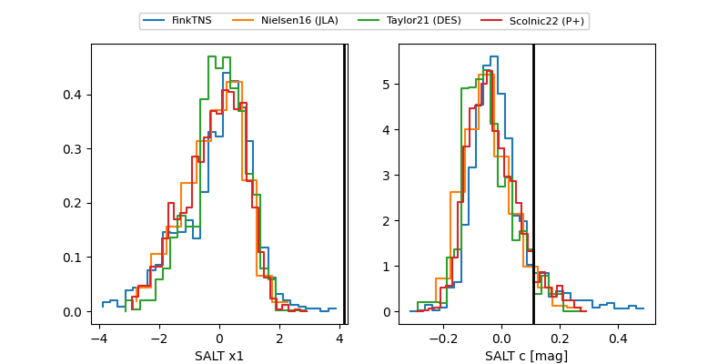

ZTF25aclcjgl
Target ZTF25aclcjgl at 2026-01-16 11:55
Aliases and brokers:
FINK: link
Lasair: link
ALeRCE: link
alt names
ZTF25aclcjgl (ztf,fink_ztf)
Coordinates:
equatorial (ra, dec) = 165.8068,+71.70955
equatorial (HMS+DMS) = 11:03:13.63,+71:42:34.38
galactic (l, b) = (134.1819,+42.97629)
Flags:
Photometry:
last ztfg=20.13
2 ztfg detections
Lightcurve

Visibility


Additional plots
